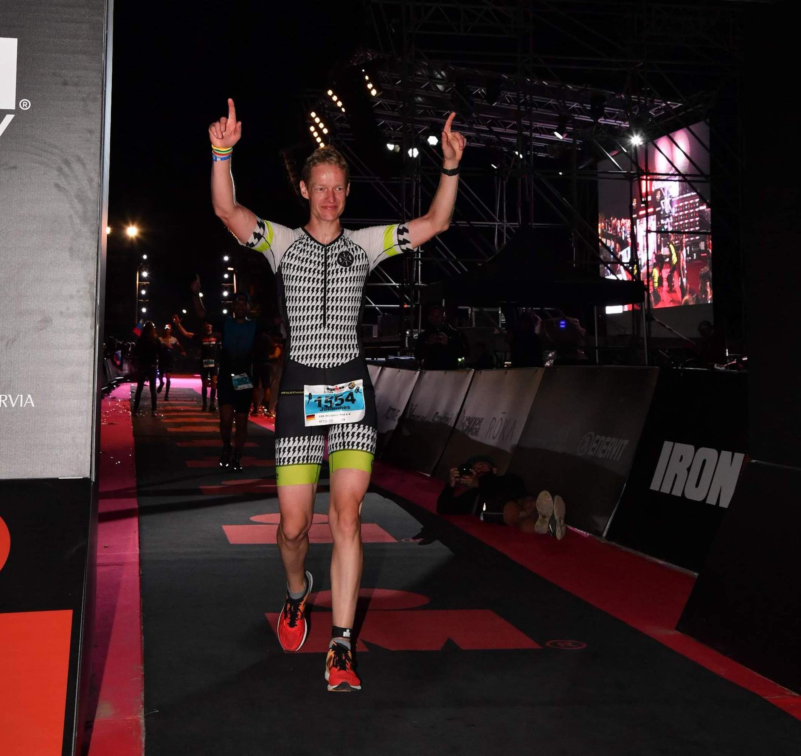

Aloha!
endurance sportsman, ambitious triathlete, addicted to structured training, recovering with good coffee & homemade cake, proudly sponsored & coached by myself

“High Five!”
Next Challenges:
40km/h auf 47km EZF King of the Lake am Attersee
Kick the Bucket! My List: (ohne Wertung)
Allgäu Triathlon Classic, Schliersee Alpentriathlon, LD Triathlon Alpe d’Huez, Norseman Xtreme Triathlon …phew, TORTOUR 300km+, Nove Colli, L’Eroica, GutsMuths-Rennsteiglauf 42,2km+, 333km+,…
My Records! Enjoyed the Race.
IRONMAN 140.6 Italy Emilia-Romagna ge:nu:ss, Ötztaler Radmarathon 09:32:01, Triathlon Mitteldistanz 1,9km-92km-21,1km 05:03:40, Halbmarathon 01:39:19 im Rahmen des Chtriman Gravelines, 10.000m 00:44:44, Längste Raddistanz Die erste und einzigartige 259-Km-Herzrunde rund um München! – „I love Munich Brevet!“
#Finished! Look back to see how far you’ve come!
2020 Ötztaler Social Radmarathon 2019 IRONMAN 140.6 Italy Emilia-Romagna, Mitteldistanz City Triathlon Frankfurt, Mitteldistanz Chtriman Gravelines, Duathlon Hilpoltstein, Halbmarathon Hilpoltstein 2018 Challenge Prague, TOUR Transalp, Trimotion 111 Saalfelden, Wings for Life World Run München, BER Airport Night Run 2017 King of the Lake am Attersee, „I love Munich Brevet!“ 263km, Challenge Prague, B2Run München, Schlosstriathlon Moritzburg 2016 King of the Lake am Attersee, Ironman 70.3 Zell am See, Giro Delle Dolomiti, Triathlon Hof, B2Run München, Stadtlauf München, Duathlon Krailling, Duathlon Hilpoltstein, Osterlauf Lohhof 2015 Ötztaler Radmarathon, Frankenwald Radmarathon, B2Run München, Schwalbe TOUR Transalp 2014 Eddy Merckx Classics, Ötztaler Radmarathon, Engadin Radmarathon, Maratona dles Dolomites, Amadé Radmarathon 2013 Ötztaler Radmarathon, Arber Radmarathon, B2Run München, Stadttriathlon Erding 2012 Arber Radmarathon, Stadttriathlon Erding, B2Run München 2011 B2Run München 2009 B2Run München 2008 Triathlon Hof 2007 Triathlon Hof